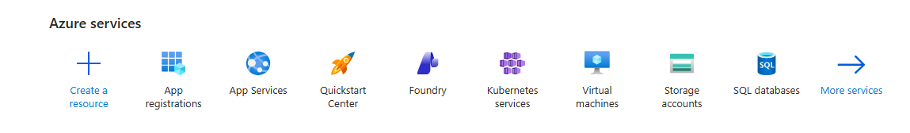
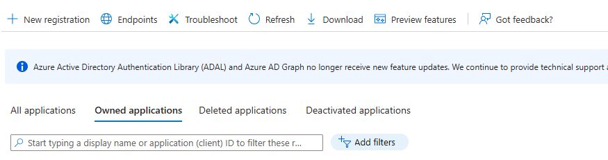
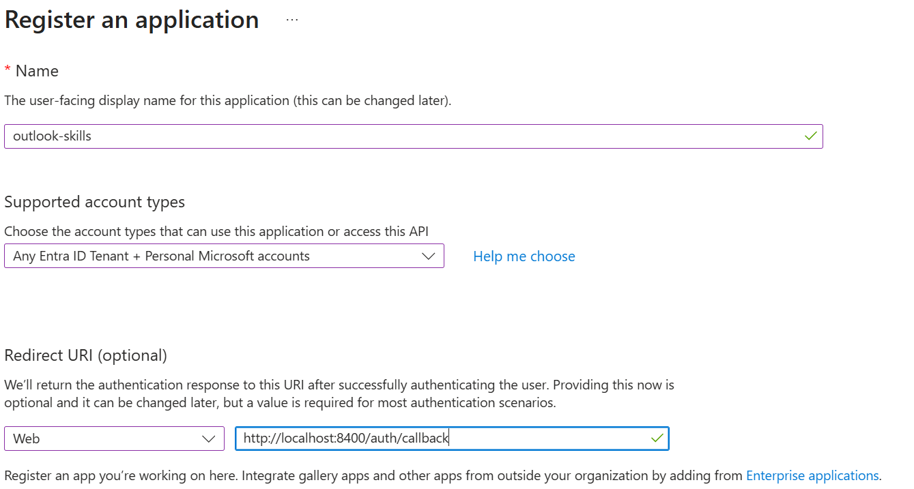
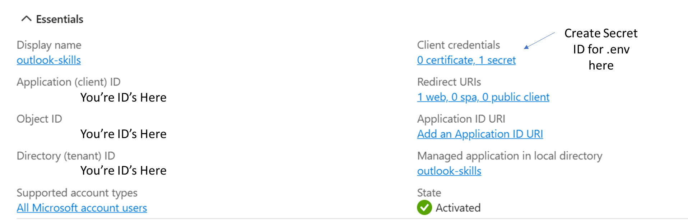
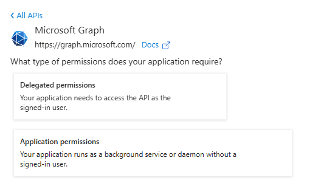
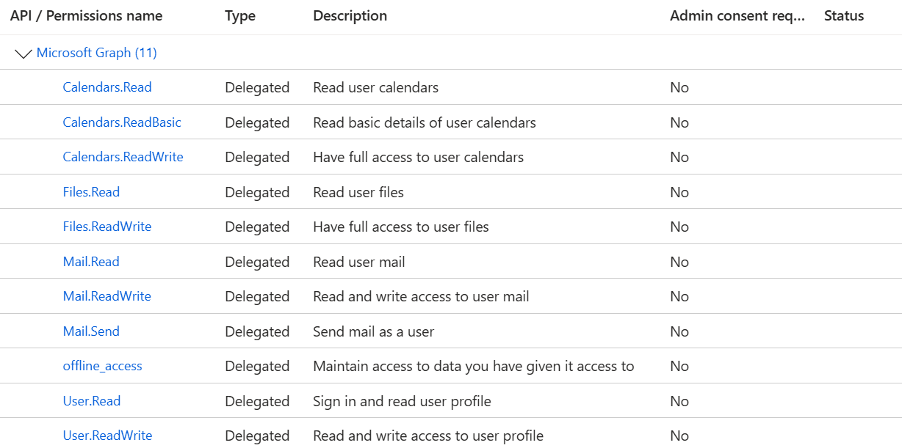

1 Navigate to App Registrations
Open the Azure Portal and find App registrations in the Azure services section.

2 Create a New Registration
Click + New registration in the toolbar.

3 Fill in Registration Details

| Field | Value |
|---|---|
| Name | Anything descriptive (e.g. outlook-skills) |
| Supported account types | Accounts in any organizational directory and personal Microsoft accounts |
| Redirect URI | Select Web and enter http://localhost:8400/auth/callback |
Click Register.
http://localhost:8400/auth/callback — this is where the auth server listens for the OAuth callback.4 Copy Your App Credentials
After registration, you'll see the app overview page. Copy the values you'll need for your .env file:

| Field | Where to find it | .env variable |
|---|---|---|
| Application (client) ID | Essentials section, left column | OUTLOOK_CLIENT_ID |
| Directory (tenant) ID | Essentials section, left column | OUTLOOK_TENANT_ID |
5 Create a Client Secret
From the app overview page, click Client credentials (shown in the screenshot above), or navigate to Certificates & secrets in the left sidebar.
- Click + New client secret
- Add a description (e.g. "Outlook Skills") and select an expiration period
- Click Add
- Copy the secret VALUE immediately — you won't be able to see it again after leaving this page
AADSTS7000215: Invalid client secret.6 Add API Permissions
Navigate to API permissions in the left sidebar, then click + Add a permission. Select Microsoft Graph, then choose Delegated permissions.

7 Select Required Permissions
Search for and add each of the following delegated permissions:

| Permission | Purpose |
|---|---|
offline_access | Silent token refresh (keeps you signed in) |
User.Read | Read your profile |
Mail.Read | Read emails |
Mail.ReadWrite | Organise, move, delete emails |
Mail.Send | Send emails |
Calendars.Read | Read calendar events |
Calendars.ReadWrite | Create and update events |
Contacts.Read | Read contacts |
Click Add permissions after selecting each one.
Files.Read and Files.ReadWrite — these are optional and support future OneDrive integration.8 Configure Your .env File
Back in your cloned repository, create the credentials file:
# macOS / Linux / WSL
cp outlook-skills/.env.example outlook-skills/.env
# Windows (PowerShell)
Copy-Item outlook-skills\.env.example outlook-skills\.envEdit outlook-skills/.env and fill in the values you copied:
OUTLOOK_TENANT_ID=common
OUTLOOK_CLIENT_ID=your-application-client-id-from-step-4
OUTLOOK_CLIENT_SECRET=your-client-secret-value-from-step-5Use OUTLOOK_TENANT_ID=common for personal Microsoft accounts. For a work or school account restricted
to a single tenant, use your Directory (tenant) ID from Step 4 instead.
bash outlook-skills/auth.sh (macOS/Linux) or
.\outlook-skills\auth.ps1 (Windows). A browser window opens for Microsoft sign-in; tokens are stored
locally in outlook-skills/tokens.json and never leave your machine.? Troubleshooting
| Symptom | Fix |
|---|---|
"Invalid client secret" (AADSTS7000215) | You used the Secret ID instead of the secret Value in Step 5. Create a new secret and copy the Value. |
| "Admin approval required" | Confirm the redirect URI is http://localhost:8400/auth/callback exactly, registered under Authentication → Redirect URIs. |
| "Token file not found" | Run the auth script first (see above). |
API returns 403 | Permissions added after last sign-in. Re-authenticate: auth.sh --reauth / auth.ps1 -Reauth. |